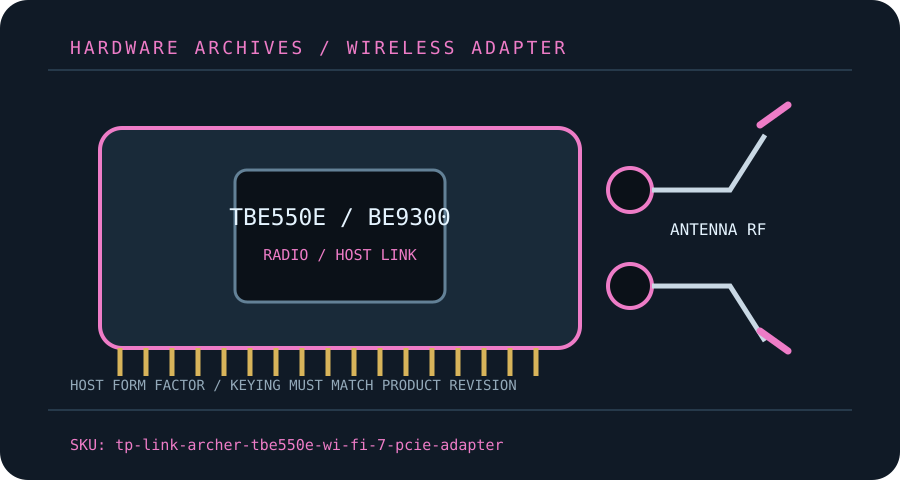

[ MODEL-SPECIFIC M.2 / PCIE WI-FI HARDWARE ]
TP-Link Archer TBE550E BE9300 Wi-Fi 7 PCIe Adapter
Tri-band two-stream desktop adapter with 320 MHz 6 GHz capability and Bluetooth 5.4.
IDENTIFICATION: Match the full model, hardware revision, regulatory region and radio-module label before ordering replacements or selecting drivers. Values are manufacturer specifications, not a guaranteed measurement.

Dedicated wireless specifications
| Cataloged product | TP-Link Archer TBE550E BE9300 Wi-Fi 7 PCIe Adapter |
|---|---|
| Chipset / radio module | TP-Link does not identify the WLAN silicon part number in its public specification; treat the installed radio-module silicon as undisclosed and use revision-matched TP-Link drivers. |
| Wi-Fi generation / standards | Wi-Fi 7 / IEEE 802.11be with legacy 802.11 a/b/g/n/ac/ax support. |
| Radio bands, channels & width | 2.4 GHz, 5 GHz and 6 GHz; 320 MHz operation applies only on 6 GHz, while 160 MHz 5 GHz and 6 GHz channels may be disabled by local rules. |
| Spatial streams / nominal link rates | 2×2 MIMO; advertised combined BE9300-class PHY rates are theoretical and are not single-client throughput. |
| Host interface / form factor / keying | PCIe x1 card; internal USB 2.0 header cable is required for Bluetooth. The PCIe slot alone does not provide the Bluetooth data path. |
| Antenna connectors | Two external high-gain antennas on the supplied movable antenna base; use its two RP-SMA connections and avoid thread mismatches. |
| Bluetooth | Bluetooth 5.4; platform/driver support can restrict features. Connect the internal USB lead and install its separate driver. |
| Operating-system / driver compatibility | TP-Link lists Windows 10/11 64-bit driver support; Wi-Fi 7 features may require current Windows 11 drivers and a compatible Wi-Fi 7 AP. |
| Regulatory and host caveats | 6 GHz access, 320 MHz channels, MLO and 4K-QAM require compatible host/AP software and are subject to regional spectrum restrictions. Confirm the adapter hardware version and country-specific product page before installing drivers; do not infer chipset from a similarly named module. |
Model-specific installation notes
Install only with the host powered down and follow the manufacturer’s manual for slot, cable, antenna and ESD precautions. Fit and electrical compatibility are separate questions: the host must support the stated interface, firmware and driver for this exact SKU.
Nominal PHY rates vary with channel width, modulation, signal quality, regulatory domain, AP capabilities and concurrent client traffic. They are not measured Internet or application throughput. Confirm local 6 GHz/5 GHz channel permissions before deployment.
Manufacturer sources
- TP-Link Archer TBE550E product specificationsTP-Link model page for tri-band rates, Bluetooth and Wi-Fi 7/regulatory limitations.
- TP-Link Archer TBE550E downloads and installation documentsTP-Link manual, driver and hardware-version selection page.
Source pages can be regional or revision-specific. Use the exact manufacturer page and package matching the label on the adapter and host.